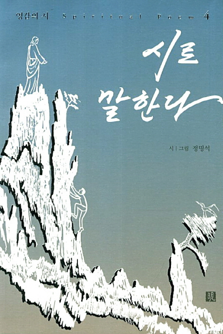
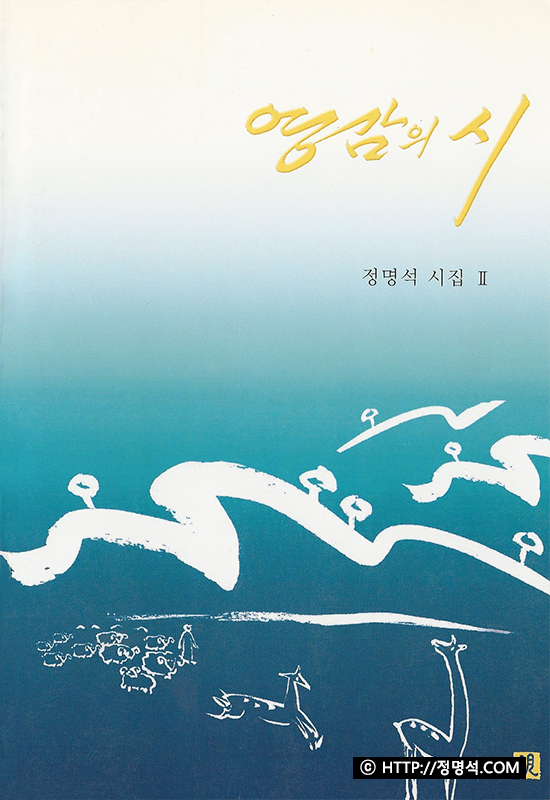

<!-- Special Dishes Section -->
<section id="gtco-special-dishes" class="bg-grey section-padding">
    <div class="container">
        <div class="section-content">
            <div class="heading-section text-center">
                            <span class="subheading">
                                시인 정명석
                            </span>
                <h2>
                    영감의 시
                </h2>
            </div>
            <div class="row mt-5">
                <div class="col-lg-5 col-md-6 align-self-center py-5">
                    <h2 class="special-number">01.</h2>
                    <div class="dishes-text">
                        <h3><span>영감의 시</span><br> 시로 말한다</h3>
                        <p class="pt-3">시와 함께 떠오르는 영상을 그림으로도 그려 함께 담았다. <br>내가 유일신으로 섬기는 창조자와 성자를 대상으로 감동되어 썼다. 또, 그가 나와 시대와 그를 섬기는 자들을 보고 시로 읊어 주어 썼다. <br>그리고 신과의 대화를 시로 많이 남겼다. <br>어떤 시는 영계에 수백 번씩 가서 내 혼이나 영이 보고 있는 것을 육이 영에 사로잡혀 쓰기도 했다. <br>인생길을 오면서 뼈를 깎고 마음 깎으며 삶에서 겪은 각종 일과 고통을 다른 글로는 다 표현 못 해 시로 써서 묶었다. 또, 하늘의 은밀한 것들은 시의 사람들이 풀고 하나님의 시대를 깨달으라고 비유의 시로 덮어 엮었다. <br><br>시를 3000편 이상 낳았으나 책으로 엮기가 어려웠는데, 제자들이 수고하여 시집 3권, 4권이 나오게 되어 보람을 느낀다. 수고했다.</p>
                        <br>
                        <h4 class="special-dishes-price">영감의 시 - 4집</h4>
                        <a href="https://www.youtube.com/playlist?list=PL4-Gauon_M4ACz2tqg8PFGINJFBI5IUFz" class="btn-primary mt-3">채널 보러가기</a>
                    </div>
                </div>
                <div class="col-lg-5 offset-lg-2 col-md-6 align-self-center mt-4 mt-md-0">
                    
                </div>
            </div>
            <div class="row mt-5">
                <div class="col-lg-5 col-md-6 align-self-center order-2 order-md-1 mt-4 mt-md-0">
                    
                </div>
                <div class="col-lg-5 offset-lg-2 col-md-6 align-self-center order-1 order-md-2 py-5">
                    <h2 class="special-number">02.</h2>
                    <div class="dishes-text">
                        <h3><span>영감의 시</span><br> 시의 여인</h3>
                        <p class="pt-3">시와 함께 떠오르는 영상을 그림으로도 그려 함께 담았다. <br>내가 유일신으로 섬기는 창조자와 성자를 대상으로 감동되어 썼다. 또, 그가 나와 시대와 그를 섬기는 자들을 보고 시로 읊어 주어 썼다. <br>그리고 신과의 대화를 시로 많이 남겼다. <br>어떤 시는 영계에 수백 번씩 가서 내 혼이나 영이 보고 있는 것을 육이 영에 사로잡혀 쓰기도 했다. <br>인생길을 오면서 뼈를 깎고 마음 깎으며 삶에서 겪은 각종 일과 고통을 다른 글로는 다 표현 못 해 시로 써서 묶었다. 또, 하늘의 은밀한 것들은 시의 사람들이 풀고 하나님의 시대를 깨달으라고 비유의 시로 덮어 엮었다. <br><br>시를 3000편 이상 낳았으나 책으로 엮기가 어려웠는데, 제자들이 수고하여 시집 3권, 4권이 나오게 되어 보람을 느낀다. 수고했다.</p><br>
                        <h4 class="special-dishes-price">영감의 시 - 3집</h4>
                        <a href="https://www.youtube.com/playlist?list=PLR28XOSZJo-b2kM4drdcnq6zfe4sMna-U" class="btn-primary mt-3">채널 보러가기 <span><i class="fa fa-long-arrow-right"></i></span></a>
                    </div>
                </div>
            </div>
            <div class="row mt-5">
                <div class="col-lg-5 col-md-6 align-self-center py-5">
                    <h2 class="special-number">03.</h2>
                    <div class="dishes-text">
                        <h3><span>영감의 시</span><br> 영감의 시</h3>
                        <p class="pt-3">여기 실린 시들은 번쩍이는 영감에 사로잡혀서 쓴 시들이다. <br>지구촌을 중심으로 한 이 보이는 세상은 육신이 사는 곳, 바로 육계(肉界)라 한다면 영계란 인간의 속사람인 영(靈)들이 사는 주관권 즉, 무형계 또는 4차원의 세계를 말한다. 나의 시(詩)의 노래들은 물론 이 지상의 일상적인 것들이지만 핵심적 주제들은 요즘 젊은이들에게 관심이 일고 있는 4차원의 세계로부터 매순간마다 걸려온 것이다. <br>이 시들 중 몇 편을 제외하고는 모두 1988, 1989년에 쓴 것들이다. 이 시들 외에도 아직 수백여 편의 시가 남아있다. 처음엔 이 시들을 방안에서 몇 사람들에게 들려 주었는데, 너무 감동적이라고 하여 이들의 권유에 의해 제1집을 내놓게 되었다. <br>사람들에게는 누구든지 번쩍이는 영감의 세계가 있는 것이다. 영적인 사람들은 더 많은 영감에 사로잡히게도 된다. 이 세상에는 이러한 사람들이 많다. 그러나 그 차원의 세계가 문제이다. 즉 차원급이 천차만별이라는 것이다. <br>나의 영의 근본자는 역시 하나님이라고 늘 말한다. 나는 영감에 의하지 않고서는 한 편의 시도 쓸 수가 없는 사람이다. 이 시의 중점은 만물과 인간들의 그 어떠함을 깨닫게 한 시다. 또 신의 권위와 존재를 신의 입장에서 영감으로 읊은 시다. 또 인간과 신을 조우(遭遇)시키는 중보적인 시(詩)이기도 하며, 세상살이에 여러 가지로 허덕이는 현대인들에게 구원에 이르는 지혜를 깨우쳐주는 시일 것으로 믿는다. 만일 이 시를 읽으면서 시의 근본을 깨닫게 된다면 심령에 큰 감동과 감화를 받을 것이다. <br>이 시를 쓰도록 나에게 시문학의 영감을 주신 주 하나님께 영광과 감사를 올리며 아울러 이 책이 나오기까지 수고한 자들에게 뜻있는 고마움을 표한다.</p>
                        <br>
                        <h4 class="special-dishes-price">영감의 시 - 2집</h4>
                        <a href="https://www.youtube.com/playlist?list=PLR28XOSZJo-ZWNnb1hHuMJ2bsuh9hVjWr" class="btn-primary mt-3">채널 보러가기</a>
                    </div>
                </div>
                <div class="col-lg-5 offset-lg-2 col-md-6 align-self-center mt-4 mt-md-0">
                    
                </div>
            </div>
        </div>
    </div>
</section>
<!-- End of Special Dishes Section -->
